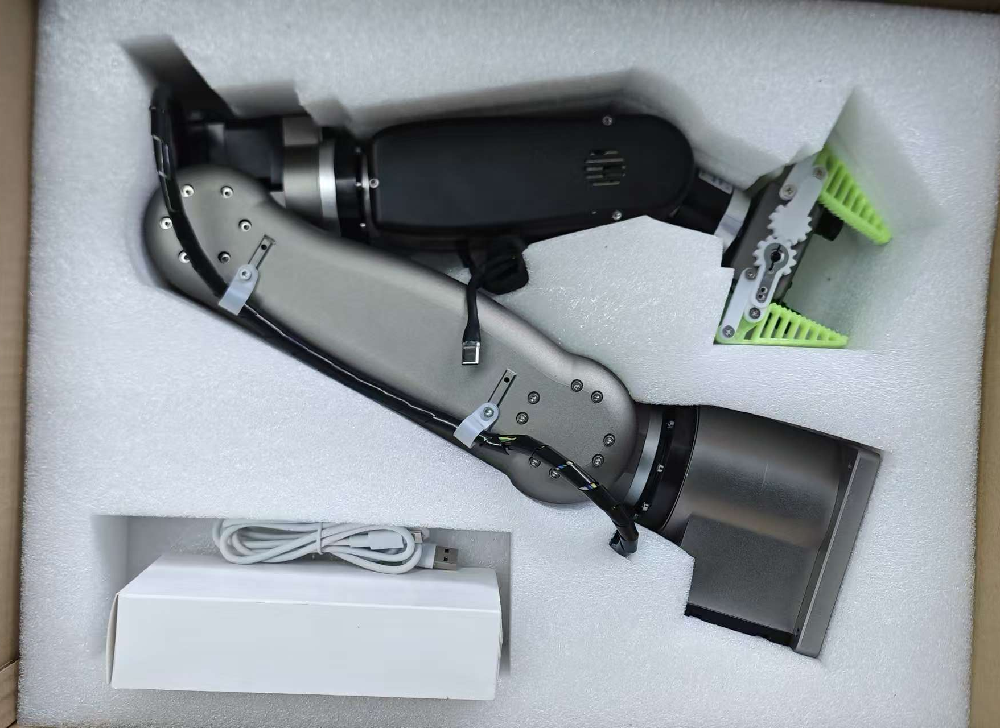
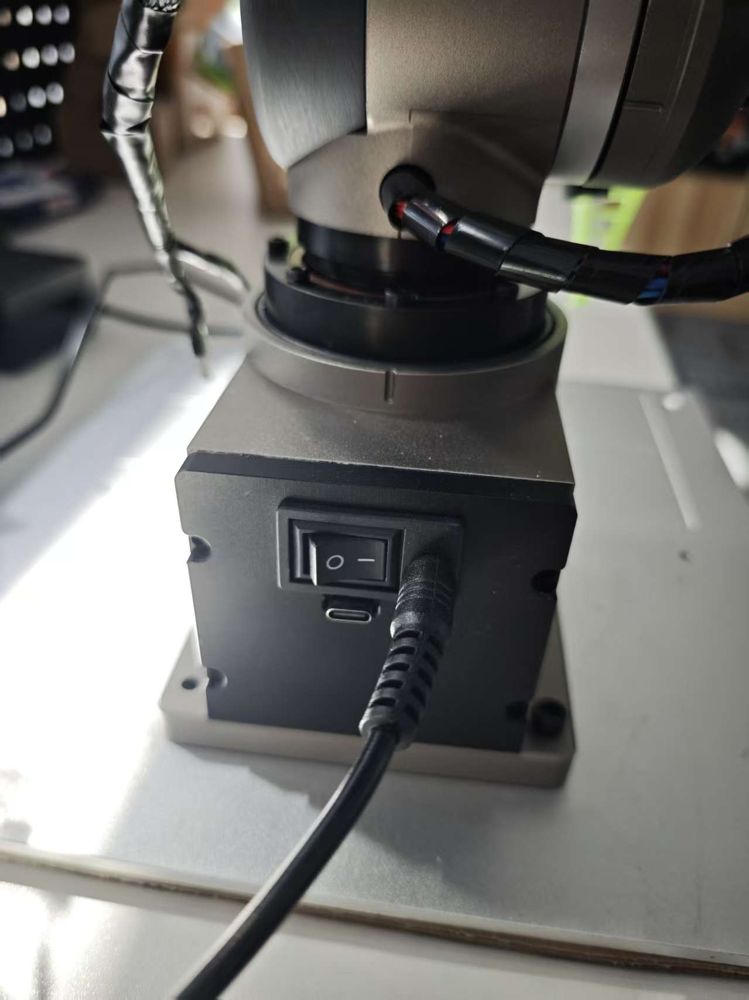
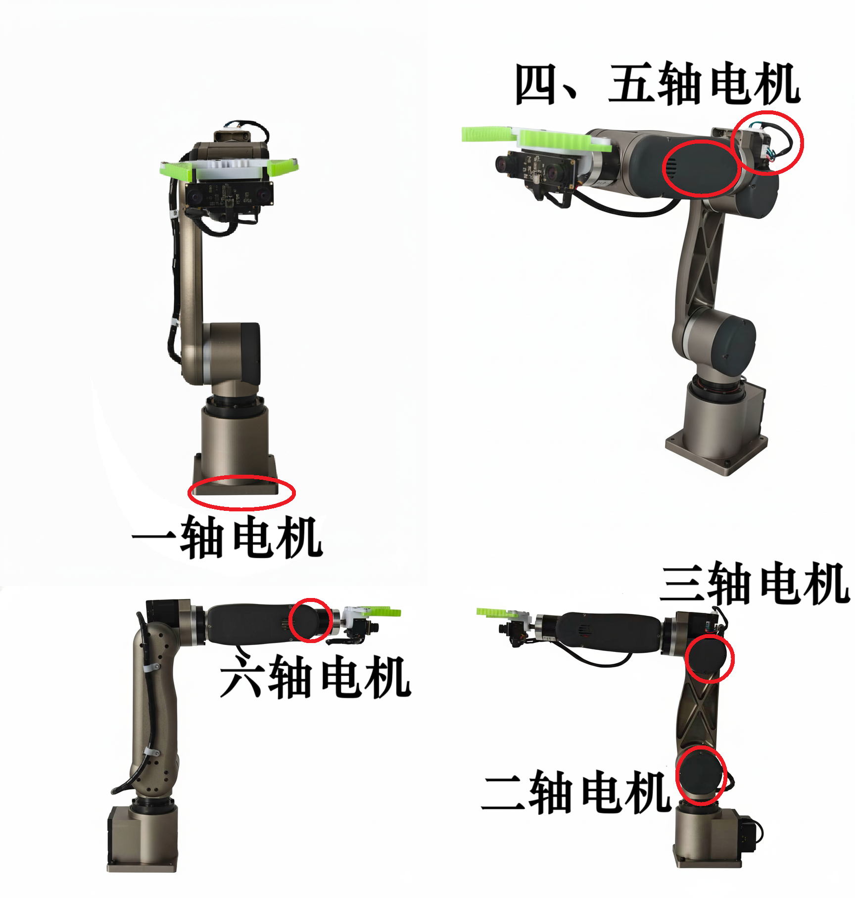
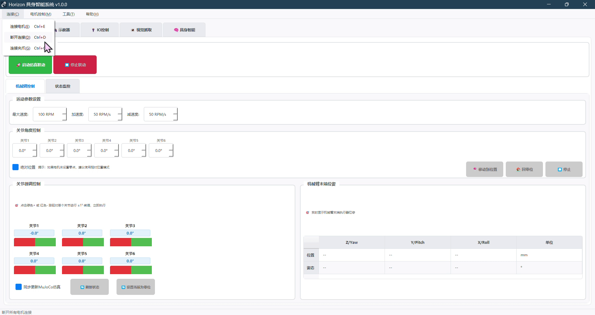
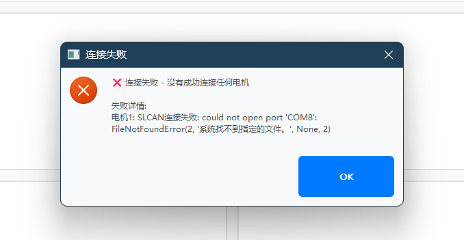
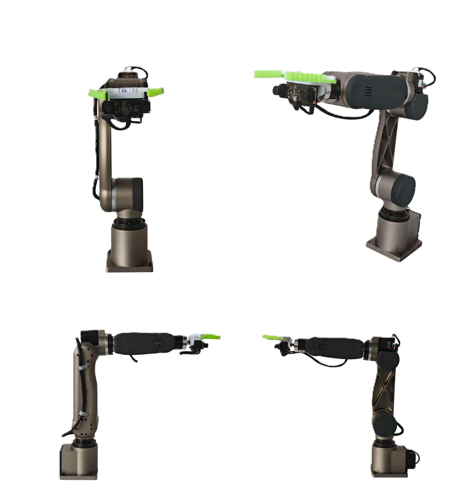
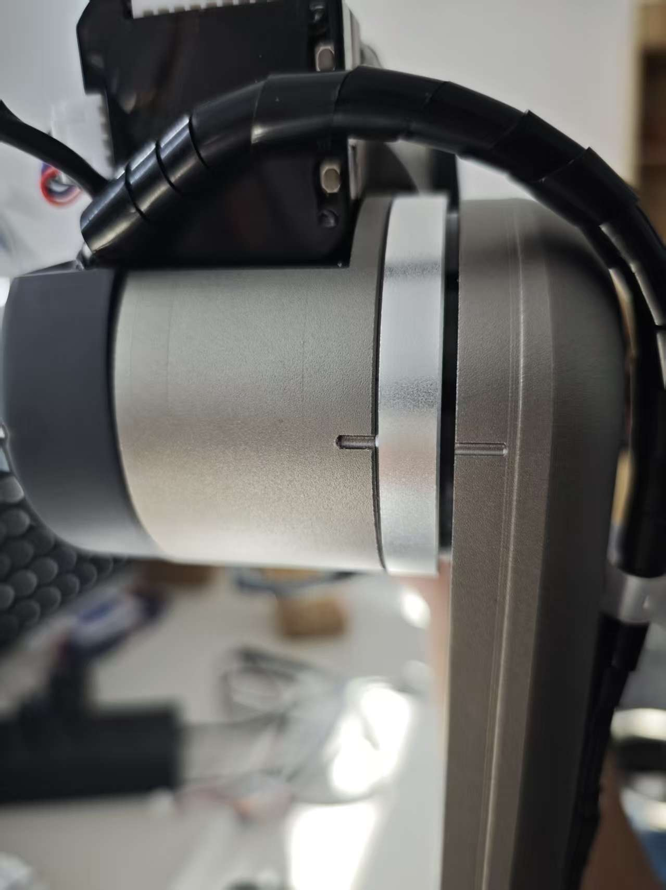

首次使用¶
本文档将引导您完成 Horizon Arm 机械臂的首次设置和使用。
开箱检查¶
收到机械臂后，请先检查包装内物品是否齐全：
标准配件清单
- 电源适配器 × 1
- Type-C 数据线 × 1
- 机械臂本体 × 1

开箱检查
⚠️ 重要提示： - 因为是定制包装，机械臂会卡得比较紧，需要小心取出，不要暴力开箱 - 不要用手触摸相机镜头，避免影响视觉功能
硬件安装¶
1. 固定机械臂底座¶
取出机械臂后需要将底座固定，否则机械臂回零时可能不稳。
2. 连接电源¶
连接步骤：
-
打开装有电源的盒子，取出电源适配器
-
将电源适配器连接到插座通电
-
另一端接机械臂底座后面的 DC 供电口
-
摆动机械臂调整至"标准姿势"，确保平稳立在桌面上
-
打开底座后方的电源开关，机械臂通电

底座开关位置
⚠️ 安全提示：
机械臂断电操作规范¶
禁止操作：
机械臂在通电运行状态下，严禁直接拔掉基座后面的电源线。工作环境应保持整洁，避免因拉扯、拖拽导致电源线意外脱落。
非正常断电的严重后果：
-
机械臂末端砸落
瞬间断电会导致机械臂失去动力支撑，末端会因重力快速下坠，极易砸坏相机、夹爪等精密模块。 -
回零参数异常
瞬时断电可能导致机械臂回零参数丢失或错乱，重新通电后回零位置可能偏离标准位置，影响后续操作精度。 -
电源系统故障
非正常断电可能导致各轴电机的供电逻辑异常，电机会错误地将内部电池识别为主要电源，即使重新通电，机械臂仍处于失能状态。此时需要手动拆开各轴外壳，逐个重新插拔电池才能恢复正常。
正确断电流程：
- 扶住机身：断电前用手扶住机械臂，防止失能后砸落
- 手动关闭开关：在基座后面手动关闭电源开关
- 确认断电：等待指示灯熄灭，确认完全断电
💡 温馨提示：
养成良好的断电习惯，可以有效延长机械臂使用寿命，避免不必要的维修成本。
售后说明：
因人为操作不当（如非正常断电、暴力操作等）导致的机械臂末端夹爪、相机或机械臂整体部件损坏，不受理退货，仅支持自费维修。
如果出现通电机械臂无法直立，查看第四周电机后盖指示灯-绿-常亮，此时就要重新插拔电池，那几轴有问题就重新插拔那几轴的电池，具体电机电池位置参考图。

电机位置特写图
3. 软件环境配置¶
📚 Anaconda 安装教程：如果还未安装 Anaconda，请参考：
Anaconda安装与配置完整教程
配置 Conda 环境¶
1. 打开 Anaconda Prompt
从开始菜单搜索并打开 Anaconda Prompt
2. 配置镜像源（推荐，加速下载）
conda config --add channels https://mirrors.tuna.tsinghua.edu.cn/anaconda/pkgs/main
conda config --set show_channel_urls yes
pip config set global.index-url https://pypi.tuna.tsinghua.edu.cn/simple
3. 切换到软件目录
cd /d E:\Embodied_AI_Arm
将路径替换为你的实际软件目录
4. 创建虚拟环境
conda create -n Embodied_AI_Arm python=3.12
提示时输入 y 确认
5. 激活环境
conda activate Embodied_AI_Arm
成功后命令行前显示 (Embodied_AI_Arm)
6. 安装依赖包
pip install -r requirements.txt
启动程序¶
每次启动前，确保已激活环境：
conda activate Embodied_AI_Arm
启动方式：
python run_gui.py
或直接双击 run_gui.py 文件
快速参考命令¶
# 激活环境
conda activate Embodied_AI_Arm
# 切换到软件目录
cd /d E:\Embodied_AI_Arm
# 启动程序
python run_gui.py
第一步：连接机械臂¶
连接步骤¶
1. 打开连接菜单
菜单栏选择：连接 → 连接电机
2. 配置连接参数
在弹出的对话框中设置：
- 串口：选择实际端口（如
COM8） - 波特率：保持
500000（与驱动板配置一致） - 电机 ID：点击"机械臂(1..6)"快速填入
3. 开始连接
点击"确定"按钮，系统将： - 逐一连接每个电机 ID - 验证通信状态 - 读取电机信息
4. 连接成功
连接成功后： - 状态栏显示"已连接 6 个电机" - 所有控制功能自动激活 - 可以开始使用机械臂

连接电机操作演示
连接失败处理¶
常见失败原因：
- 串口被其他程序占用
- 波特率或 CAN 速率不匹配
- 电机未上电
- 电机 ID 设置错误
系统会提示失败的电机 ID 和具体错误信息。

常见错误示例：串口选择错误
如需断开连接：菜单栏选择"连接 → 断开连接"
第二步：设置零位¶
为什么要设置零位？¶
机械臂需要一个准确的零位参考点，才能保证运动精度和重复定位精度。

机械臂标准姿势参考
设置步骤¶
1. 调整机械臂至标准姿势
- 手动关闭机械臂电源开关
- 调整机械臂为大致标准位置
- 手动对齐机械臂外壳上的刻度线

机械臂刻度线参考
2. 初步设置零位
- 在首页左下角点击"刷新状态"
- 点击"设置当前为零位"按钮
注意：一开始一定要先直接设置机械臂为零位，如果不设置，直接点击微调机械臂会直接转动到记录的对应位置，可能会让机械臂受损。
3. 精确微调
- 在首页左下角使用"微调"功能
- 手动调整各轴位置，精确对齐标准刻度线
- 再次点击"设置当前为零位"按钮

首页左下角微调功能
4. 验证标准姿势
参考下图再次确认确认机械臂姿势是否正确：
机械臂标准姿势参考
重要说明¶
- 设置完成后，机械臂会记录当前位置，断电后不会丢失
- 如果非正常断电（直接拔线或碰撞），下次回零位置可能不准
- 务必通过电源开关正常关机
第三步：检查运动方向¶
设置好零位后，需要检查各轴旋转方向是否正确。
检查方法¶
详细的检查方法和标准请参照：用户指南 - 电机参数设置 - 6轴运动方向参考标准
完成设置¶
检查并调整完运动方向后，机械臂即可正常使用！
安全注意事项¶
使用前必读：
- 工作范围限制
- 机械臂各轴已设置好对应工作范围
-
请勿随意修改，防止机械臂碰撞
-
紧急停止
- 任何界面按空格键可触发全局急停
-
遇到异常情况立即使用
-
正常关机
- 务必通过电源开关正常关机
-
不要直接拔线断电
-
定期检查
- 定期检查零位是否准确
- 发现偏移及时重新设置
快速导航¶
完成首次设置后，建议按以下文档继续学习和使用（所有链接均已校验可正常跳转）：
- 用户操作：查看 用户指南 了解完整功能和界面说明
- 视觉标定：参考 视觉标定详解 完成相机与手眼标定
- ROS2 开发：进入 ROS2控制平台 进行进阶开发与二次开发
- 手柄控制：学习 Joy-Con手柄控制 进行手动操作
- IO 控制：查阅 IO控制系统操作说明 实现外部信号联动
- AI 配置：根据 AI API配置指南 完成具身智能相关配置
- 故障排查：访问 故障排除 解决常见问题
Horizon Arm 首次使用 | 快速上手，轻松开始
© 2025 Horizon Arm